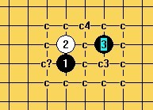
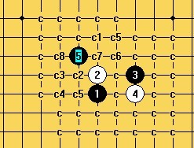
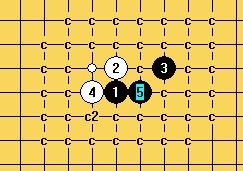
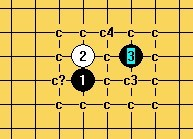
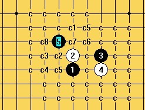
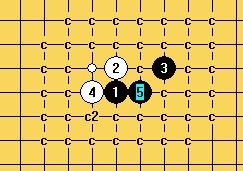

陨落的残月
首页
五子棋交流
#1 <font color="red">陨落的残月</font> 作者：陨落之城 发表时间：2011-8-18 23:36:17
 残月地毯全谱.part001.rar残月地毯全谱.part002.rar残月地毯全谱.part003.rar残月地毯全谱.part004.rar残月地毯全谱.part005.rar残月地毯全谱.part006.rar残月地毯全谱.part007.rar残月地毯全谱.part008.rar残月地毯全谱.part009.rar残月地毯全谱.part010.rar残月地毯全谱.part011.rar
残月地毯全谱.part001.rar残月地毯全谱.part002.rar残月地毯全谱.part003.rar残月地毯全谱.part004.rar残月地毯全谱.part005.rar残月地毯全谱.part006.rar残月地毯全谱.part007.rar残月地毯全谱.part008.rar残月地毯全谱.part009.rar残月地毯全谱.part010.rar残月地毯全谱.part011.rar［ 逆刃 于 2011-8-18 23:44:45 时奖励此帖[金币加 100 威望加1］
［ 虎哥 于 2011-8-19 1:07:05 时花20金币送鲜花一朵］
［ 失落刀 于 2011-8-19 17:06:41 时花20金币送鲜花一朵］
［ 隐藏菜系 于 2011-8-19 19:42:44 时花20金币送鲜花一朵］
［ 离子阵阵雨 于 2011-8-19 21:08:39 时花20金币送鲜花一朵］
［ 江南新绿 于 2011-8-20 15:02:09 时花20金币送鲜花一朵］
［此帖子已被 屏蔽 在 2011-9-13 23:49:31 编辑过］
#2 Re:陨落的残月 作者：陨落之城 发表时间：2011-8-18 23:40:50
ps1图中C?表示没终结，其他c都2打必胜。
ps2谱是我参考简谱做的，前期是用06扫的，发现镨越做越大就改用07.
ps3再次感谢论坛各位老师的指点~
ps4我记得有几个点没做完，主要是白棋的一些活3冲4，不过应该不影响黑胜。
［此帖子已被 陨落之城 在 2011-8-18 23:54:11 编辑过］
#3 Re:陨落的残月 作者：踵酃 发表时间：2011-8-19 1:28:00
能不能合并一下？
#4 Re:陨落的残月 作者：aabb 发表时间：2011-8-19 2:12:32
 下来看看。谢谢楼主。
下来看看。谢谢楼主。
#5 Re:陨落的残月 作者：小帮帮 发表时间：2011-8-19 3:10:24
按理说很好，但是看着好像很大，决定了一下，还是不下载了！
#6 Re:陨落的残月 作者：五连达人 发表时间：2011-8-19 8:07:54
 真纠结
真纠结
#7 Re:陨落的残月 作者：自来水 发表时间：2011-8-19 8:15:14
貌似以前有人发过...
#8 Re:Re:陨落的残月 作者：陨落之城 发表时间：2011-8-19 8:19:36
引用：
原文由 自来水 发表于 2011-8-19 8:15:14 :
貌似以前有人发过...
ShowPost.asp?ThreadID=9734
你是说这个吗？？
#9 Re:陨落的残月 作者：自来水 发表时间：2011-8-19 8:32:48
也许吧...反正我收集到后来它就自然地毯了
#10 Re:陨落的残月 作者：踵酃 发表时间：2011-8-19 8:36:18
9楼地毯了也不发出来共享， 哈哈。 被人抢先了哦。
#11 Re:陨落的残月 作者：自来水 发表时间：2011-8-19 8:59:06
我以为这样发是重复的...而且那个6也没地毯
发谱我还不如多参与活动
#12 Re:Re:陨落的残月 作者：陨落之城 发表时间：2011-8-19 9:17:15
引用：
原文由 自来水 发表于 2011-8-19 8:59:06 :
我以为这样发是重复的...而且那个6也没地毯
发谱我还不如多参与活动
我在做这个谱的时候没有下载过那个谱，很多点都是我自己做的，也有些在前段时间在论坛里也有提问。
#13 Re:陨落的残月 作者：飞翔 发表时间：2011-8-19 9:32:44
学习 不错不错
#14 Re:陨落的残月 作者：小元 发表时间：2011-8-19 11:50:56
虽然已经有，不过还是支持
#15 Re:陨落的残月 作者：五子酷 发表时间：2011-8-19 11:52:32
不错！~ 正需要它！
正需要它！
#16 Re:陨落的残月 作者：离子阵阵雨 发表时间：2011-8-19 12:06:15
感谢楼主分享，离子我是永远的伸手党
#17 Re:Re:陨落的残月 作者：陨落之城 发表时间：2011-8-19 13:30:59
引用：
原文由 离子阵阵雨 发表于 2011-8-19 12:06:15 :
感谢楼主分享，离子我是永远的伸手党
感谢的话，也不送朵花意思一下~ ［ 黄药师 于 2011-8-19 13:32:07 时花20金币送鲜花一朵］
#18 Re:陨落的残月 作者：离子阵阵雨 发表时间：2011-8-19 19:46:54
怎么送。。。。 ［ 陨落之城 于 2011-8-19 19:55:25 时花20金币送鲜花一朵］
#19 Re:陨落的残月 作者：玩不过就跑 发表时间：2011-8-20 21:42:23
看起来很大额，辛苦了
#20 Re:陨落的残月 作者：天涯独行客 发表时间：2011-8-22 4:45:11
弱弱地问一句：谱中怎么会有这样雷人的谱，是合并出现的错误吗？
#21 Re:Re:陨落的残月 作者：离子阵阵雨 发表时间：2011-8-22 4:48:04
引用：
原文由 天涯独行客 发表于 2011-8-22 4:45:11 :
弱弱地问一句：谱中怎么会有这样雷人的谱，是合并出现的错误吗？
天涯你的图裂了- -还是我电脑不行？
#22 Re:陨落的残月 作者：天涯独行客 发表时间：2011-8-22 10:08:01
可以肯定不是下载的问题，我重新下载，解压，还是如此，呵呵，楼主需要检查一下了
#23 Re:Re:陨落的残月 作者：陨落之城 发表时间：2011-8-22 11:03:54
引用：
原文由 天涯独行客 发表于 2011-8-22 10:08:01 :
可以肯定不是下载的问题，我重新下载，解压，还是如此，呵呵，楼主需要检查一下了
不明白你说的是什么，能说下你的图是什么吗？我看不到
#24 Re:陨落的残月 作者：will 发表时间：2011-8-26 20:30:11
11个文件全部下在以后根本无法合并解压？！请检查一下
#25 Re:陨落的残月 作者：陨落之城 发表时间：2011-8-26 22:13:38
不需要合并 只要解压第一个就可以了
#26 Re:陨落的残月 作者：will 发表时间：2011-8-26 22:44:46
是的，按理解压任何一个都可以，但是貌似出错了。。。我解压第一个，他就说缺少卷标云云
#27 Re:陨落的残月 作者：陨落之城 发表时间：2011-8-27 0:27:48
其他人好像没有这个问题 我想是你电脑的问题
#28 Re:陨落的残月 作者：裁决兔子 发表时间：2011-8-31 14:24:18
弱弱的问一句，残二的那个唯一六现在有结论了没？？
#29 Re:陨落的残月 作者：潇洒 发表时间：2011-9-4 11:20:21
=======上图对应的爱五子棋谱代码如下，以便你拆解：========
h8h9j9g8i8g9g7i10f7h7f9
======================================================还剩多少个12？？
#30 Re:Re:陨落的残月 作者：will 发表时间：2011-9-16 10:38:06
引用：
原文由 陨落之城 发表于 2011-8-27 0:27:48 :
其他人好像没有这个问题 我想是你电脑的问题
肯定不是我电脑的问题，我到公司里电脑上重新下载，也是一个样。我图片也传不上来，有个201181823345.rar之类的文件，但是名字都不连续。哎，罢了，楼主能发一份给我吗 vb15000@hotmail.com［此帖子已被 will 在 2011-9-16 10:44:20 编辑过］
#31 Re:Re:Re:陨落的残月 作者：屏蔽 发表时间：2011-9-16 10:49:29
引用：
原文由 will 发表于 2011-9-16 10:38:06 :
引用：
原文由 陨落之城 发表于 2011-8-27 0:27:48 :
其他人好像没有这个问题 我想是你电脑的问题
肯定不是我电脑的问题，我到公司里电脑上重新下载，也是一个样。我图片也传不上来，有个201181823345.rar之类的文件，但是名字都不连续。哎，罢了，楼主能发一份给我吗 vb15000@hotmail.com［此帖子已被 will 在 2011-9-16 10:44:20 编辑过］
你都知道不连续了……改成连续就成了……
确实不是电脑问题，是电脑技术问题
#32 Re:陨落的残月 作者：屏蔽 发表时间：2011-9-16 10:50:33
顺便提一句，你图片传不上来是因为你威望暂时不足，请多多努力。
#33 Re:潇洒【==Re:陨落的残月==】 作者：陶涛业余 发表时间：2012-4-14 15:55:26
还剩很多的12无法解决